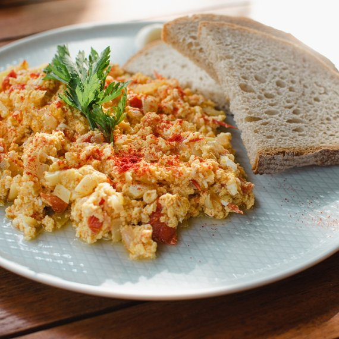

Tradiční lehký pokrm z paprik, rajčat a vajec, oblíbený v české a slovenské kuchyni.
Rajčata oloupeme a společně s paprikou je pokrájíme. Cibuli oloupeme a nakrájíme na drobno. Stroužek česneku oloupeme a utřeme.
V hrnci (asi 2 l) rozehřejeme sádlo a zpěníme na něm drobně pokrájenou cibuli.
Na cibuli přidáme utřený česnek a vmícháme sladkou papriku, aby byla cibule hezky obalená.
Přisypeme papriky, přikryjeme a dusíme 10–20 minut, dokud papriky nezměknou.
Přidáme pokrájenou uzeninu a rajčata, dusíme dalších 20 minut. Pokud rajčata nepustí dostatek šťávy, přilijeme přiměřené množství vody.
Až je vše měkké, přidáme vejce a mícháme, vejce se brzy srazí.
Závěrečný trik: vše zahustíme přidaným rajským protlakem. Bez něj je lečo řídké a nevábné, protlak mu dodá správnou konzistenci.